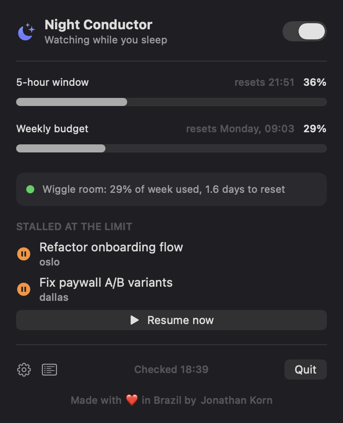
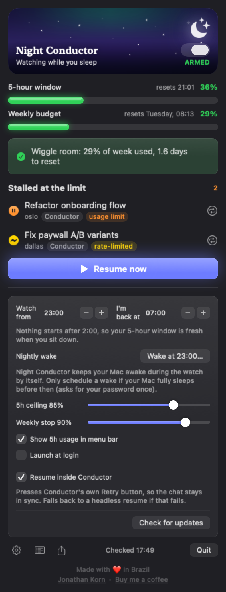

Your coding sessions hit Claude's limit at midnight. Night Conductor finishes them while you sleep.

You're in flow. Then Claude stops.
You go to sleep. The work doesn't have to.
Why I built this
I run a lot of Claude Code sessions at once in Conductor. It changed how I build.
So first, a real thank you to the people who make it. Conductor is the thing I open every morning.
But I kept hitting the usage limit late at night, right in the middle of something good. The session would stop, and the work would wait until morning. I wanted it to keep going while I slept. So I made Night Conductor to sit quietly in the menu bar and pick the work back up the moment there's room.
With thanks to the Conductor team.Wherever you run Claude
One menu bar app, watching three places at once. Stalled sessions land in a single list, each resumed the right way for where it lives.
Your parallel Conductor workspaces. It presses Conductor's own Retry, so the chat keeps going in place.
Cowork sessions in the Claude desktop app, resumed inside their own sandbox where they belong.
Plain Claude Code in your terminal, picked back up with claude --resume, exactly how you would.
How the night goes
Every few minutes inside your window (23:00 to 07:00 by default), it runs the same quiet loop.
Reads your sessions, read only, for anything whose last message is a 429 usage-limit error.
Checks your live 5-hour and weekly usage from the same endpoint /usage uses, with the token already in your Keychain.
Only resumes with real headroom. It respects your ceilings, paces the week, and leaves your mornings alone so a 6am resume can't lock you out of your own window.
Presses Retry so the work continues in the chat. Spread across the night, re-checked after each one, capped so it never runs away with your week.
The interface
A moon in your menu bar shows how much room you have. Open it for two live meters, a plain-language line about what it's doing, and everything waiting at the limit.

Get it
Grab the latest build, drag it into Applications, and click the moon. macOS warns once on first launch (the build is not notarized yet): click Open Anyway in Privacy & Security.
Download for MacIt's MIT licensed. Read every line, then build it yourself.
git clone https://github.com/jkkorn/Night-Conductor
cd Night-Conductor/NightConductor
./build-app.sh